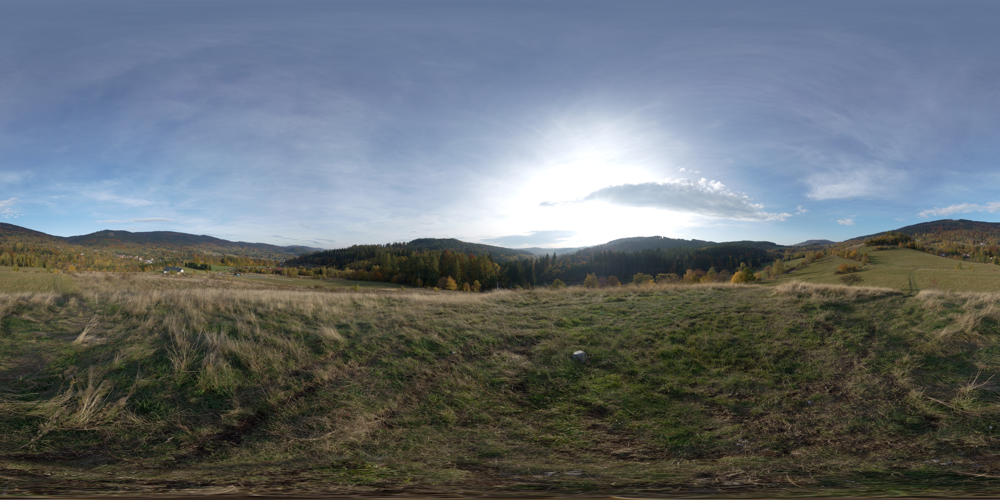
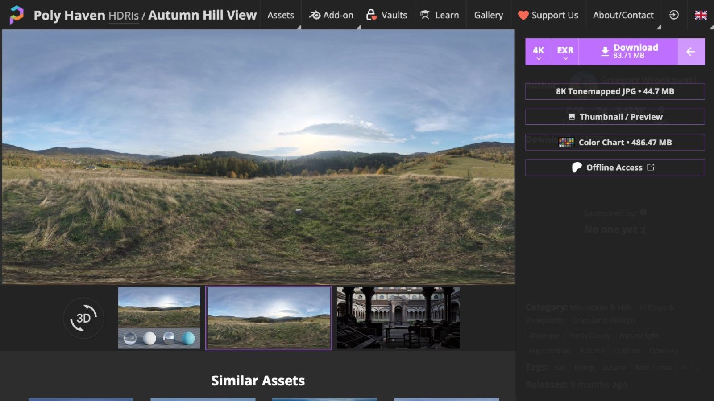
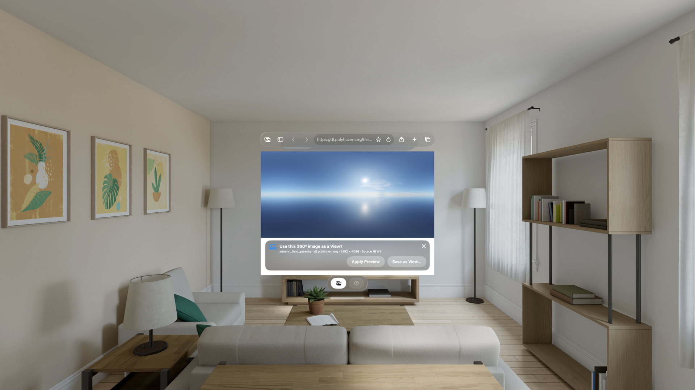

Web guide
Find a high-resolution View online.
Only a complete panorama that is at least 4,096 × 2,048 and exactly 2:1 can be used directly from Locus Browser. When an image qualifies, you can apply a session-only preview or save it to your View library without leaving your workspace.
4K minimum · Exact 2:1 · JPEG, PNG, or HEICTry it first
Open a ready-to-use 4K View.
Open this example in Locus Browser. When the image appears by itself, Locus will offer Apply Preview and Save as View….
Autumn Hill View from Poly Haven, available under CC0. This copy is 4,096 × 2,048.

Know what to look for
A compatible View is a complete 360° equirectangular panorama. It looks unusually wide and contains the whole sphere in one flat image.
| Check | What Locus needs |
|---|---|
| Shape | Exactly twice as wide as it is tall: a 2:1 equirectangular image. |
| Minimum size | 4,096 × 2,048 pixels. Larger images generally look clearer in Apple Vision Pro; 8K or 12K is preferable when available. |
| File type | An SDR JPEG, PNG, or HEIC image. HDR, EXR, cube maps, video, and interactive 360° viewers are not View images. |
| Web source | A public image or a page-owned image download that Locus can read with the page's signed-in session. A thumbnail, canvas-only preview, or cross-site-protected file may not qualify even when a full-resolution download exists. |
| Rights | A license or permission that allows your intended use. Being downloadable does not by itself grant permission. |
.hdr or .exr file.Download the right file from Poly Haven
Poly Haven's main Download button defaults to HDR or EXR. Those files do not work as Views in the current version of Locus.
- Open an HDRI asset page. Confirm that the preview is a complete 2:1 panorama.
- Open the small menu at the far right of the Download controls. It appears beside the main Download button.
- Choose 8K Tonemapped JPG. Do not choose HDR or EXR. The JPG is an SDR image that Locus can inspect, preview, and save.

Download a View from Blockade Labs Skybox AI
Skybox AI can prepare a full-resolution image while you stay signed in. Use its equirectangular export—not a cube map or HDR file—so Locus receives one complete 2:1 image.
- Open your finished Skybox in Locus Browser. Sign in if Skybox AI asks, then select Download on the finished world.
- Choose Resolution 8K. This is comfortably above Locus's 4K minimum.
- Under Equirectangular, choose Download JPG or Download PNG. Do not choose Cube Map, HDR, or EXR.
- Open Export Status and wait for Complete. Select the download arrow beside the 8K Equirectangular JPG or PNG export. Locus Browser opens the downloaded image and offers Apply Preview and Save as View….
Find a full-resolution image on other sites
Sites such as Wikimedia Commons and Poly Haven can help you find equirectangular panoramas. Check the individual file's license, dimensions, and format before using it.
Many download pages embed only a small thumbnail or an interactive viewer. That preview will not show Use as View if it is below 4K or is rendered as a canvas. Look for Original file, Full resolution, or a direct JPEG, PNG, or HEIC link. The full image should open by itself in the Browser tab.
Use the image in Locus
- Open the page in Locus Browser. Browse normally until you reach the panorama or its download page.
- Choose the full-resolution image. If the qualifying image is embedded directly in a page, select the Use as View mark in its corner. Otherwise open the page's Original file or direct image link.
- Wait for Locus to inspect it. A qualifying standalone image opens the prompt Use this 360° image as a View? with its filename, host, dimensions, and format.
- Choose Apply Preview or Save as View. Both use the pixels already displayed by that Browser tab; Locus does not silently fetch a different file after you confirm.

Preview or save?
If another View is already using your available import, Locus offers Get More Imports so you can open Plans & Purchases instead of reaching a dead end.
After saving, use Edit View in Locus to adjust its starting direction, brightness, contrast, color, Room lighting, and optional sunlight.
If Use as View does not appear
- Open the original image rather than the download page's thumbnail.
- Confirm that the displayed image is at least 4,096 × 2,048 and exactly 2:1.
- Choose a JPEG, PNG, or HEIC instead of HDR, EXR, ZIP, video, or a cube map.
- Page-owned image downloads, including same-site
blob:downloads, can use the page's current signed-in session. Canvas-only viewers, non-image downloads, and cross-site-protected files may still not expose reusable image pixels. - If a download button hands the file to another app, return and look for an Original file or full-resolution image link that opens in the current tab.
See the FAQ for short answers about resolution, import allowances, and download behavior.